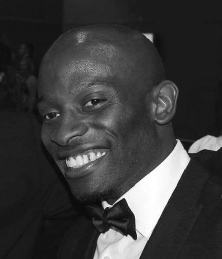

Uche Osoka

Summary
Hardworking jack of all trades looking to grow as a web developer and always willing to learn new things
Education
Cambridge Seminars College
- A Level. June 2000
- Mathematics A
- Physics A,
- Information Technology A
University of Hull
- Mechanical & Medical Engineering Sept. 2004 - June 2006
- Electronic Engineering. Sept 2003 - June 2004
University of Loncolnshire & Humberside
- Software Engineering: Games, Similation & Virtual Reality
Skills
- 20+ years Customer Service Experience
- Problem Solving
- Cooking
- Photographic memory
Awards & Accomplishments
- Novice Class British Champion of UK Natural Physique Assosiation Bodybuilding Competition Oct 2018
- Annihalated High Blood Pressure with Exercise & Grapefruit 2015 - present.
- Successfully built heavy muscle physique up to 80kg muscle/body weight for 6+ years without meat.
My Information